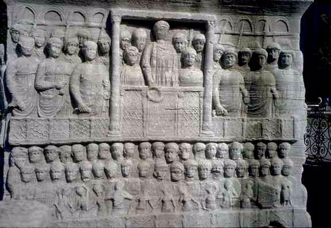
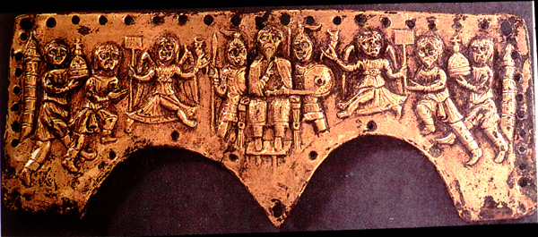

 |
Debate: Roman Rule vs. Barbarian Rule |
 |
Proposition: Barbarian rule is better than Roman rule
Remember: you will be called upon to answer at least one of the questions as part of the debate; you may (should) also take part in other parts if you have things to say that differ from what your teammates have said.
Debate:
Team 2: argue against the Proposition
Assigned questions - Team 1:
1. Background - Who was Sidonius Apollinaris, and how does he view barbarians?
2. Background - Describe taxation under the Romans and under the barbarians
3. Background - Describe how the countryside was organized in the Roman empire, and what happened to it under the barbarians
4. Presentation of the proposition: what is the topic? what is the basis of your argument?
5. Arguments - select one significant sentence from the primary or the secondary sources that that favors your side, and explain what it means
6. Arguments - select one significant sentence from the primary or the secondary sources that that favors your side, and explain what it means
7. Arguments - select one significant sentence from the primary or the secondary sources that that favors your side, and explain what it means
8. Do the summary, summarizing your team's arguments and state why they are preferable (you can't do this ahead of time).
Assigned questions - Team 2:
1. Background - Who was Priscus, and what was his view of the Roman empire and the barbarians?
2. Background - Describe the form and layout of cities under the Romans and under the barbarians
3. Background - Describe the functions of cities under the Romans and under the barbarians
4. Presentation of the proposition: what is the topic? what is the basis of your argument?
5. Arguments - select one significant sentence from the primary or the secondary sources that that favors your side, and explain what it means
6. Arguments - select one significant sentence from the primary or the secondary sources that that favors your side, and explain what it means
7. Arguments - select one significant sentence from the primary or the secondary sources that that favors your side, and explain what it means
8. Do the summary, summarizing your team's arguments and state why they are preferable (you can't do this ahead of time).
Readings
We have already discussed some of the features of Roman society, and we will be looking at aspects of "barbarian" society in the next few classes. In order to give you some more specific information from which to build a case, I'm assigning two articles about specific topics having to do with the transition from the Roman to the Medieval worlds, and two primary sources to give you something of an idea of how the Romans viewed barbarians (alas, we do not have written sources that can tell us the other side). The two articles are available as PDF files in the "Files" folder on Canvas; they are dense but highly readable and informative.
Chris Wickham, "The Other Transition: From the Ancient World to Feudalism," Past and Present 103 (1984): 3-36. on Canvas as WickhamOtherTransition1984.pdf
Bryan Ward-Perkins, "Continuitists, Catastrophists, and the Towns of Post-Roman Northern Italy," Papers of the British School at Rome 65 (1997): 157-176. on Canvas as WardPerkins, Continuitists
A third article, not required, that contains some heated (academically
speaking) discussion about the concept of the "decline of the Roman
empire," is
J. H. W. G. Liebeschuetz, "The uses and abuses of the
concept of 'decline' in later Roman history, or, Was Gibbon politically
incorrect?" with comments by Averil Cameron, Bryan Ward-Perkins, Mark
Whittow, and Luke Lavan, in Recent
Research in Late Antique Urbanism, ed. Luke Lavan (Portsmouth,
NH: 2001), pp. 233-245. On Canvas
as LiebeschuetzUses2001.pdf
The primary sources are linked from this page:
Priscus on Attila the Hun, AD 448
The Greek writer Priscus actually visited the Huns and conversed with Attila. He received a very different impression of the people from the fearsome pictures given earlier by Ammianus Marcellinus. We may however infer that the Huns had been a good deal changed by their contact with the European peoples. Priscus and a companion, Maxim, were sent by the Roman government with messages to Attila in 448. Priscus first tells of their long journey from Constantinople to Scythia, the territory then occupied by the Huns north of the lower Danube.
Sidonius Apollinaris: Two Letters
(Caius) Sollius Apollinaris (Modestus) SIDONIUS, c. 431-c. 489, was a Roman Aristocrat living in Gaul at the time of its transformation from a province of the Roman Empire to the rule of germanic kings. His surviving letters and poems illustrate aspects of that experience. The link, above, leads to two of his letters.
Sidonius Apollinaris: Song 12
The following is a translation of a Latin poem . . . but is he joking, or not???
Am I to
write poetry, surrounded by
these long-haired hordes?
I, who
am condemned to put up with Germanic speech
and to praise with serious
mien the
song the gluttonous Burgundian sings,
who greases his hair with rancid
butter?
Shall I tell you what cuts
my poetic compositions short?
Since Thalia beholds our patrons, all of them seven-foot
fellows,
she
avoids the six-foot meter, frightened away by the barbaric lute.
You can call your eyes and ears lucky,
lucky too your nose,
which is not forced to inhale very early in the
morning
all of ten preparations of garlic and onions.
Lucky
you - whom, unlike the old grandfather and the nurse's
man,
giants do not visit before the dawn of day in such numbers and
withal of
such size,
that the kitchen of Alcinuous would hardly have been able to
entertain them.